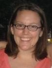
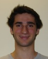

|  |
Colby Adams adamsca0@sewanee.edu
I am a rising senior studying political science and biochemistry at the University of the South. Although my career interests are in clinical medicine, this summer provided me with an opportunity to explore the world of medical research. In addition to working on a study exploring the effects of maternal depression and antidepressant use on neonates with Dr. Megan Smith, I also assisted with the Infant Follow Up and Young Children Learning Studies, two of the major studies in Dr. Linda Mayes's lab. I am excited to take the scientific principles and the insights into psychopathology that I learned working with the DEL team and apply them to become a more thorough physician in the future. |
|
Kevin Callender oliveira@med.umich.edu
I'm a rising senior studying psychology, applied statistics and moral philosophy at the University of Michigan - Ann Arbor. I'm broadly interested in the etiology and treatment of aggressive, oppositional, and antisocial behavior in children. I joined the Developmental Electrophysiology Lab this summer to learn about some of the neurological underpinnings of early psychopathology, and the methods used to unearth these processes. You might be surprised to know that I was born and raised in Rio de Janeiro, Brazil, I have an identical twin brother, I don't own a TV, and I started using dental braces at 21 years of age. |
|
Sarah Clark sarahwhitmireclark@gmail.com
I am a rising junior at the University of the South in Sewanee, TN studying Psychology and Spanish. While at the Child Study Center, I worked with Dr. Michael Crowley on an EEG study looking at negative reinforcement in children, the results of which we hope to publish sometime later this year. This was my first experience doing research and using the EEG, but the staff at the CSC was patient and supportive in teaching me. I learned so much about designing and running an experiment, doing research with children, and using and interpreting the EEG. I'm not sure where the future will take me, but I'm sure it will build on all I have learned this summer. |
|
Kathryn Cochran cochrks0@sewanee.edu
I am a psychology major at The University of the South in Sewanee, TN. This summer was my first introduction to graduate level research. I worked closely with Dr. Linda Mayes and Dr. David Bridgett to pilot a study looking at response to infant cry. My summer experience at the Child Study Center included opportunities to observe diagnostic clinical evaluations for Autism, the Strange Situation, and several EEG studies. Now, I plan to continue exploring my interest in psychology while studying abroad in Vienna this Fall semester. |
|  |
Sam Dailey sdailey814@hotmail.com
I am a rising senior in high school at Hopkins school in New Haven. This summer I worked closely with David Bridgett and Linda Mayes to pilot a study on responses to infants' cries. In addition, I am continuing working into the fall to pilot a study on infant theory of mind. I hope to work with the Child Study Center throughout my senior year, and am incredibly thankful for all of my experiences here |
 |
Kara Holcomb krholcomb@gmail.com
|
 |
Sarah Johnson sarah.l.johnson@yale.edu
|
|
Tory Klingenstein toryklingenstein@gmail.com
Tory is a psychology major at Yale and a member of Silliman College, class of 2010. She is interested in social cognition and face processing. As an intern at the Child Study Center, Tory has worked on the Family Research Consortium V, a conference to be held in the fall of 2009 that looks at the comorbidity of substance abuse disorders and psychiatric disorders. In addition, she has spent the summer designing a project that examines the process of social grouping. |
 |
Tammi-Marie Phillip tammi-marie.phillip@yale.edu
|
 |
Ansley Riedel riedeae0@sewanee.edu
|
 |
Ann Thomasson athomass@sewanee.edu
|